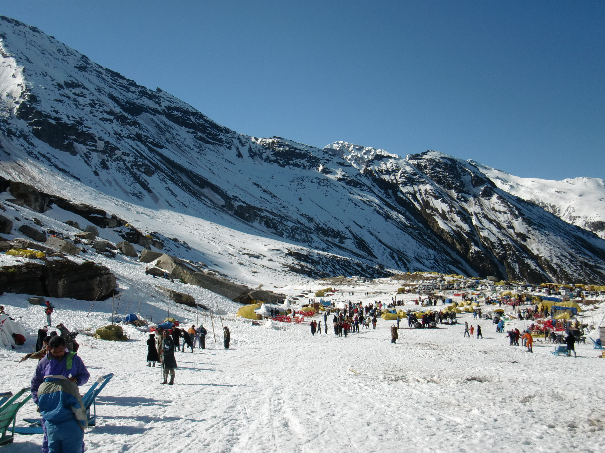

Introduction
Kullu is located in the charming Kullu valley and is set amongst the backdrop of the mighty Himalayas. This town is famous for its temples and the annual Dussehra festival, both of which attract thousands of tourists. It is also known for its handicrafts.
Location
Kullu is located in the central part of the state of Himachal Pradesh in the northern region of India. It is located amidst the Himalayas at an altitude of 1200 m above sea level at the confluence of Beas and Sarvari rivers. It is 240 km north of Shimla. The weather in Kullu is alpine. Summers (April-June) are mild and winters are cold (November-February). It experiences southwestern monsoon rains in July-September.
History
Formerly, the Kullu valley was known as Kulanthapitha, meaning the end of the habitable world. The earliest recorded information of this area goes back to 1st century AD, when this valley began to be inhabited. In the medieval period, Kullu and the area around it was ruled by a number of local rulers. The Kullu valley was isolated from other parts of the country for many centuries until it came under British rule.
Fair And Festivals
The festival of Dussehra, which marks the victory of good over evil, is celebrated all over India in the month of October. However, Dussehra in Kullu valley is special. It begins when Dussehra festivities in other parts of the country are over. The main event of this festival is taking out of Lord Raghunath's (local version of Lord Ram) idol through the streets on a palanquin carried by pilgrims. The procession also has villagers dancing in traditional attire.
Best Time To Visit
The best time to visit Kullu is in summers, between April and June. It is also visited in October during the Dussehra festival.
How To Reach
BY AIR - Kullu has its own airport, known as Bhuntar airport, which connects it to important Indian cities. This airport is 10 km away from the town. From the airport, buses and taxis are available. BY RAIL - The closest railway station to Kullu is Jogindernagar railway station, which is around 125 km away. This narrow gauge railhead is well-connected all the important towns and cities of India via Chandigarh (270 km from Kullu). From the railway station, buses and private cabs are available. BY ROAD - State- owned or private buses are available from Shimla, Pathankot Delhi, Ambala, Chandigarh and Palampur. The other option is hiring a private taxi.
Tourist Attractions
Kullu is famous for its temples and festivals. The main tourist attraction of Kullu is the Raghunath Temple, dedicated to Lord Ram, who is one of the principal deities of the Hindu religious pantheon and the patron deity of the entire Kullu valley. Raja Jagat Singh, the erstwhile ruler of Kullu, built this temple in 1660 to atone for his wrongdoings. He obtained a statue of Lord Ram from Ayodhya and established it within this temple. Jagannathi Devi Temple or the Bekhli temple is 3 km from Kullu and is located in the village of Bekhli. It is a stiff 1½?hour climb to reach this temple, but it provides a panoramic view of Kullu. The Bijli Mahadev Temple is located on a spur at a height of 2460 m. True to its name, the temple is often stuck by lightning (bijli, lightning).
Places Around Kullu
There are a number of shrines around Kullu. The Basheshwar Mahadev Temple at Bajura (15 km) from Kullu is famous for its exquisite carvings. The Vaishno Devi Temple (4 km) and the Vishnu Temple at Dayar (12 km) are other important shrines worth visiting. There are a number of tourist spots as well. The small town of Manikaran (45 km) is famous for its hot sulfur springs. It is located at an altitude of 1737 m in the Parvati River valley. These hot springs are famous for their healing powers. This place is both revered by the Hindus and the Sikhs. Travelers can visit the Shri Ramchandra Temple and the Shri Guru Nanak Devji Gurdwara in Manikaran. Manikaran offers hiking and trekking facilities to the tourists. Kaisdhar (15 km) and Kasol (42 km), the latter located amidst pine forest, are important picnic spots. Shoja (69 km), at an altitude of 2692 m, offers the traveler a breathtaking view of the entire Kullu valley. Raisom (13 km), on the banks of river Beas, is a good site for trekking. The town of Naggar (23 km) was the erstwhile capital of the state of Kullu for more than 1,400 years. There are number of historic monuments and temples in this town. Kullu attracts the adventure-seeking tourist by offering trekking and hiking trails in and around the valley. Stretches of River Beas are also used for white-water rafting.